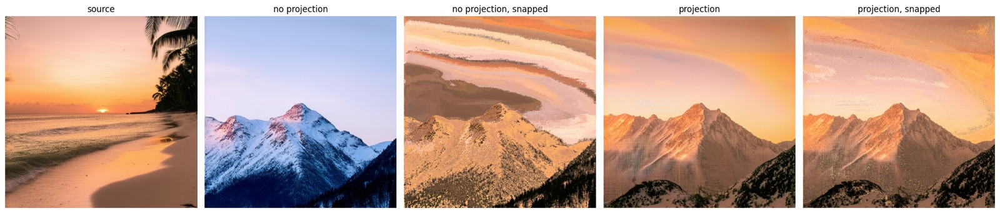
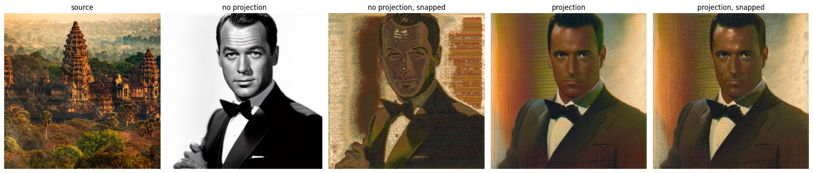

Same pixels, new picture
Can an AI draw anything you ask for using only the exact pixels of another photo? Not similar colors: the same pixels, every one used exactly once, like building a mosaic out of the tiles of a different mosaic.


How it works
Pour all of a photo's pixels into a bucket and you get its color histogram: which colors it has and how many of each, with no record of where they were. An image with exactly the same histogram and the same size is just a rearrangement of those pixels.
Fixing the colors after the image is drawn goes badly. A blue-and-white mountain has nowhere sensible to put a sunset's worth of orange, so it gets smeared across the sky in bands. Instead, I enforce the bucket while the image is still being drawn. Image generators (here, Stable Diffusion 3.5) start from static and sharpen it over a few dozen steps. A few times along the way, I take the model's rough draft, repaint it in the source's colors with a technique called sliced optimal transport, and hand it back. The model then reworks the scene so those colors make sense: the snow becomes alpenglow. At the very end, every pixel is swapped for a distinct pixel from the source, and because the picture was already planned around those colors, the swap barely shows.
The notebook runs on a free Google Colab GPU. It ends with a technical write-up covering the math, limitations, ideas for future work and a bibliography.